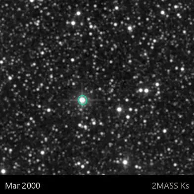

A lo largo de un cuarto de siglo
Próxima Centauri
La estrella más cercana al Sol, a 4,2 años luz: una pequeña enana roja, demasiado débil para verla a simple vista.

De 2MASS en marzo de 2000 a SPHEREx en julio de 2026, Próxima Centauri cruza el campo. Chronosphere mide su movimiento a partir de estas 27 imágenes: 3,86 segundos de arco al año; el catálogo da 3,86.
Abrir Próxima Centauri a lo largo de 27 años
Fuentes: 2MASS · WISE, NEOWISE · SPHEREx, NASA/JPL-Caltech, IRSA · SIMBAD · Wikipedia